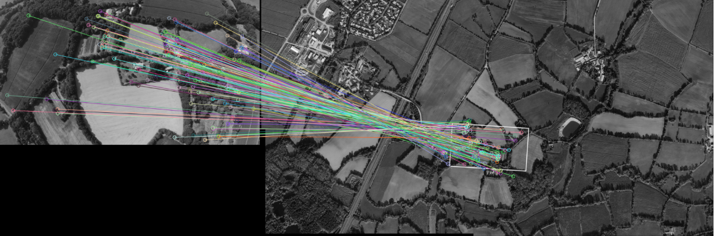
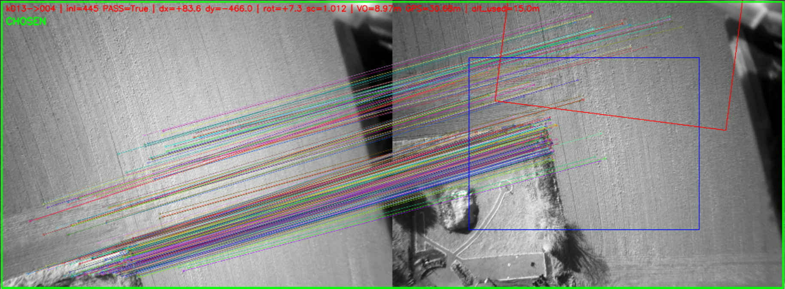

Nicomatic: GNSS-Denied Autonomous Drone
Freelance · 9 months · Solo
Computer Vision
Signal Processing
Visual Odometry
Map Matching
Object Tracking
MAVLink
INAV
Raspberry Pi 4
Python
Ubuntu
IMU
Real-Time
Overview
- 9-month freelance mission for Nicomatic: make a drone fully autonomous without GPS, replacing it entirely with camera and IMU sensors.
- Hard constraint: everything runs on a Raspberry Pi 4 in real time. No deep learning, too heavy. All algorithms had to be lightweight and fast enough to keep up with the drone's flight loop.
- Worked alone on all parts of the project across four distinct modules.
1) GNSS Denied
a) Preloaded Map Matching
- The drone carries a preloaded aerial map of the mission area. During flight, the downward camera captures live images that are matched against the stored map to determine the exact current position.
- Used image matching techniques that work under rotation, scale change, and partial occlusion, because the camera angle and altitude are never perfectly stable.
- The map is also updated in-flight: new imagery captured by the drone is merged back in, keeping the reference map fresh for areas that have changed since it was preloaded.

b) Visual Odometry
- Each frame t is compared against t-1 and t-2 to calculate the shift in translation and rotation between frames.
- Combined with IMU data (accelerometer and gyroscope) to correct for drift. By knowing the GNSS location at frame zero, you can estimate the full trajectory from there.
- Combined with the map matching, this gave a reliable localization system solid enough that we sold it.

2) Ground Object Tracking
- Track moving objects on the ground while the drone itself is moving. No neural network: too slow for real-time on a Pi 4.
- Used keypoint detection on frames t, t-1, and t-2 to measure the global background shift. Anything that doesn't move consistently with that shift is a moving object.
- Added optical flow and a Kalman filter on top to combine both sources and smooth the result. End result: fast and stable detection of moving objects even while the drone is flying around.
3) Sound Control
- Each command (ARM, up, down, start mission...) maps to a specific audio frequency. The drone detects and classifies them using signal processing in real time.
4) Android App
- App with a geolocated map: tap a point on the map to get its GNSS coordinates, then send them to the Pi 4 to start a mission and fly to that location.
- Sends commands to start different Python scripts on the drone and receives logs back. Connects over Wi-Fi or Bluetooth.
- If the drone goes out of range, the mission keeps running. When it comes back in range, it reconnects automatically and continues normally.


Tech Stack
Python
Computer Vision
Signal Processing
MAVLink
INAV
Raspberry Pi 4
Ubuntu
IMU
OpenCV
Visual Odometry